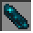
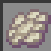
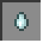
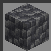
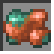
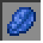
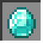
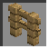

Stone Golem
Miner
The Stone Golem is the miner. Put its chest on the floor where you want a mine and it will dig a hub room and four straight trunk tunnels out of it, propped and lit like a mineshaft.
Building a Stone Golem
Each golem is built from its own pattern of blocks with a carved pumpkin or jack o'lantern placed on top (see each golem's page). The pumpkin and all but the lowest block are consumed, the lowest block becomes the golem's chest, and the golem stands on it. You do not need a chest first: the pattern makes one. The golem is bound to that chest and starts dormant.
The chest is also craftable, so you can move or replace it. It has 27 slots and never joins into a double chest.


Waking it up
A golem starts dormant: head hanging, standing still, holding out the thing it wants in its off hand. Right-click it with that item to give it an offering. Each offering is worth 45 minutes of work and it stores at most two (90 minutes). It then asks for something different, so no single item will do. The clock runs only while the golem is loaded and has a job site.
These are the eight items it can ask for: hover over a slot for its name. They are deliberately unrelated to its job, so keeping a large operation going means going out exploring.
 Nautilus ShellFound: drowned, fishing
Nautilus ShellFound: drowned, fishing Prismarine CrystalsFound: ocean monuments
Prismarine CrystalsFound: ocean monuments
Echo ShardFound: ancient cities Disc FragmentFound: ancient cities
Disc FragmentFound: ancient cities Chorus FruitFound: the End
Chorus FruitFound: the End
Phantom MembraneFound: phantoms
Ghast TearFound: ghasts Breeze RodFound: breezes
Breeze RodFound: breezesWhat it does
- It digs a 5 × 5 hub room around its chest, then a 3 × 3 trunk out of the middle of each wall in all four directions, up to 64 blocks each. Everything is cut from the chest's own level up; it never digs the floor.
- Every fifth block of a trunk is a mineshaft support (a fence post each side, a plank beam across) and a torch goes up two blocks after it.
- It builds these from fences, planks, torches and cobblestone it fetches from its chest, and carries in a pack. If the chest is short of what the next section needs it waits rather than dig an unsupported, unlit tunnel.
- Short gaps in the floor (up to five blocks) are bridged with cobblestone. Liquid, falling sand or gravel, a long drop or anything it does not dig ends that trunk, and it leaves caves it breaks into open for you to explore.
- It digs bare-handed and drops what an iron pickaxe would give. It digs a dozen blocks, then collects the drops and takes them to the chest.
Like every golem it carries one stack at a time: it has no inventory, picks things up in its hand, takes them to its chest and goes back for the next. With a stack already in hand it first gathers more of the same item, up to a full stack, so it makes fewer trips. Supplies come out of the chest the same way.
It produces
 Cobblestone
Cobblestone Granite
Granite Diorite
Diorite Andesite
Andesite Tuff
Tuff
Cobbled Deepslate Coal
Coal Raw Iron
Raw Iron
Raw Copper Raw Gold
Raw Gold Redstone Dust
Redstone Dust
Lapis Lazuli
Diamond Emerald
EmeraldIt uses

Oak FenceFences and planks (any wood) for supports TorchTorchesCobblestoneCobblestone, to floor over gaps
TorchTorchesCobblestoneCobblestone, to floor over gapsNotes
- Place the chest on the floor of where you want the mine, with room around it. Stock the chest with fences, planks and torches.
- A golem prefers its own chest to any other chest nearby.